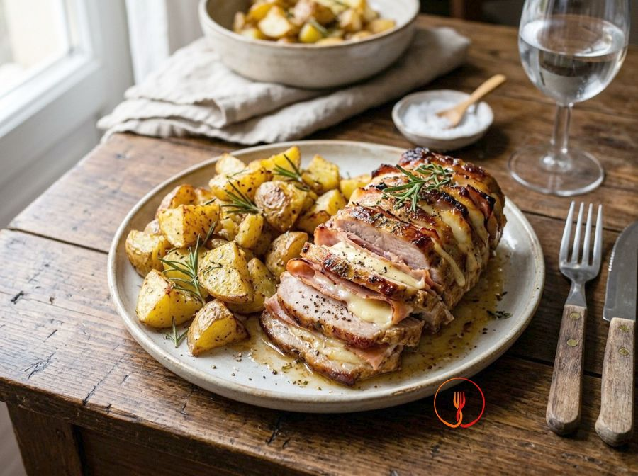

Stuffed pork loin with roasted potatoes
Stuffed pork loin is perfect for a lunch or dinner with friends. The meat, cut accordion-style, is stuffed with delicious ingredients. To be accompanied by a steaming portion of roasted potatoes
Ingredients
- Pork loin1 kg
- Sliced cooked ham150 g
- Sliced smoked provola cheese100 g
- Fine saltto taste
- Ground black pepperto taste
- Potatoes1 kg
- Rosemary1 sprig
- Garlic1 clove
- Extra virgin olive oilto taste
Allergens
Milk
May contain traces of: Gluten, Soy, Sulphites.
Method
- Place the loin on a cutting board and, using a sharp knife, cut it accordion-style, taking care not to cut through the base completely
- Rub the meat with a pinch of salt and pepper and stuff it, between one slice and another, with the thinly sliced cooked ham
- Also insert the slices of provola cheese
- Continue in this way until you have used all the ingredients
- Place the stuffed loin on a baking tray lined with parchment paper and bake at 190 degrees for about 1 hour
- To ensure the meat is cooked to perfection, I suggest monitoring the core temperature with a probe meat thermometer: when the roast reaches 70 degrees, you can remove it from the oven
- Prepare the side dish: peel the potatoes, cut them into wedges and place them in a baking dish with a clove of garlic, a pinch of salt and pepper, and the rosemary
- Drizzle with a thread of extra virgin olive oil and bake at 200 degrees for about 40 minutes
- Arrange the stuffed pork loin, together with the roasted potatoes, on a serving plate and serve
Nutrition facts (estimate)
| Per serving (305 g) | Per 100 g | |
|---|---|---|
| Energy | 2280 kJ / 545 kcal | 749 kJ / 179 kcal |
| Protein | 48 g | 16 g |
| Carbohydrates | 30 g | 9.8 g |
| of which sugars | 1.6 g | 0.5 g |
| Fat | 24 g | 8.0 g |
| of which saturates | 8.2 g | 2.7 g |
| Fibre | 3.3 g | 1.1 g |
| Salt | 2.5 g | 0.8 g |
AI estimates based on average CREA / USDA data: indicative only, not a substitute for medical or dietitian advice.
Open the recipe in the app for the shopping list, ingredient sheets and nearby shops.